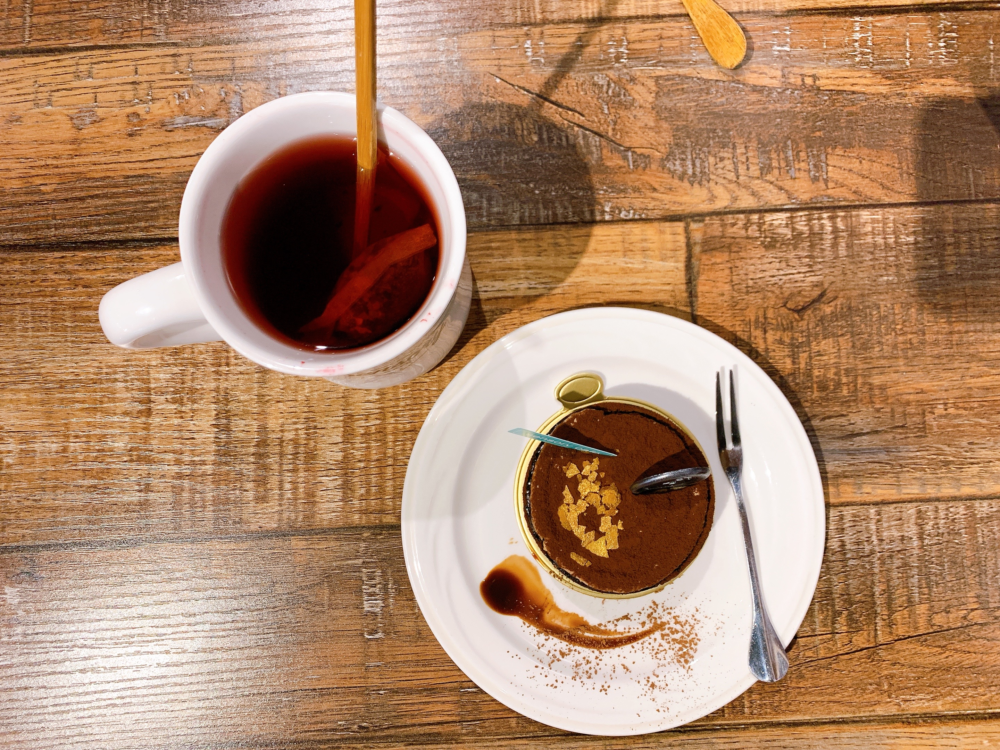

那家咖啡館 THERECAFE
新竹市 東區
價值 : $ $
評分 :

一個風很大、工程師很多、但美食很少的地方。少數能為人稱道的佳餚大概是麥當勞裡新竹區特賣的大份肉圓以及貢丸湯吧。這是大多人對新竹的理解，而身為一個地道的新竹人，我對這印象給予肯定，但我只能說答對了一半，讓我來說的話新竹是個優雅的城市，在市中心車水馬龍喧囂的夾縫中，穿過老舊的街區，走過幽靜的小巷，我們必然能在某個街角或是陋巷中巧遇咖啡廳。新竹，一個美食很少但咖啡跟下午茶特別美味的城市。
下午茶 | 咖啡廳 | 甜點